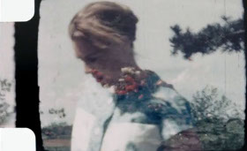

Motu Maeva
Maureen Fazendeiro
Frankreich / Portugal 2014
43 min – HD – franz. OmeU
K: Maureen Fazendeiro, Isabel Pagliai – T: François Abdelnour, Jules Valeur, Miguel Martins – S: Catherine Libert – Mit Sonja André
Deutsche Premiere
Grand Prix Europe - Brive FF
Reise durch die Erinnerungen auf Super-8 von Sonja André, Abenteurerin des 20. Jahrhunderts, in den Tschad, nach Tahiti, Polynesien und ins Paris der 1950er Jahre, ausgehend von Motu Maeva: der Insel, die sie selbst gebaut hat.
mittwoch 14 okt 18.30 uhr werkstattkino
Maureen Fazendeiro geb. 1989. Studien über die Zusammenhänge zwischen Tanz und Kino. Maureen Fazendeiro lebt und arbeitet in Paris und Lissabon. Sie realisiert eigene Projekte und arbeitet bei der Edition „Independencia“. MOTU MAEVA ist ihr Filmdebüt.